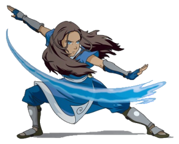

Meet the Characters

Katara
Katara was a waterbender from the Southern Water tribe. As the only waterbender living in the tribe, she was rasied by her grandmother along with her brother, Sokka. As teenagers Sokka and Katara found Aang, a young Air Nomad Avatar who had been frozen in ice with his bison, Appa. Avatar Aang, recently defrosted, was in need of a waterbending teacher. Katara was still learning herself, but offered what help she could. Katara and Sokka decided to join Aang in his adventure to save the world.